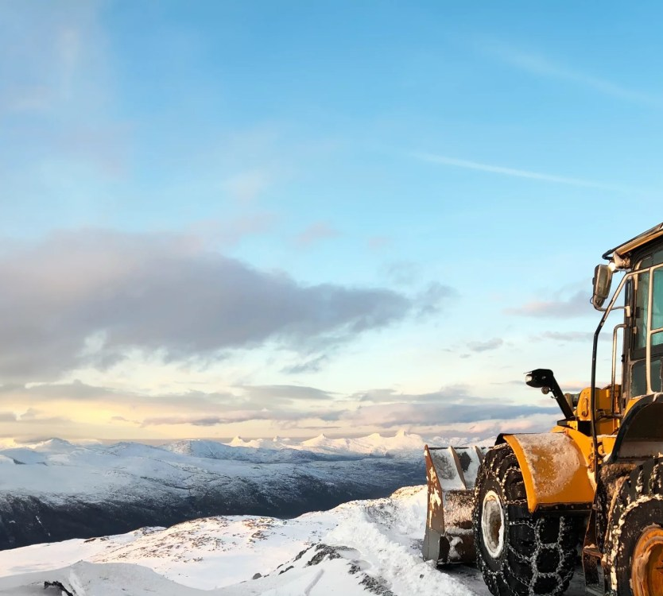
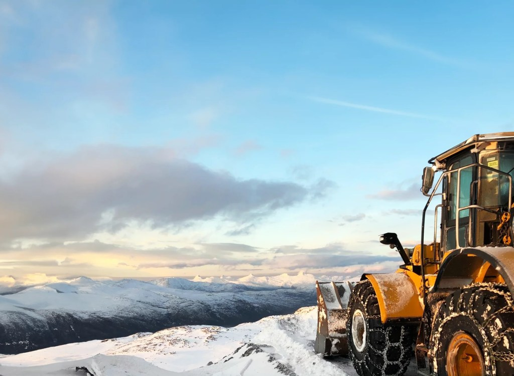
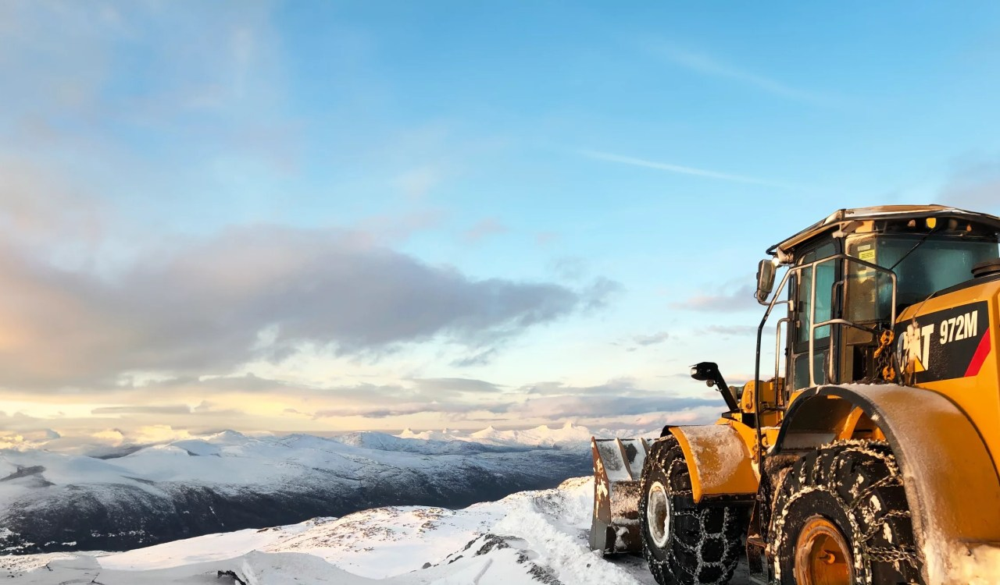
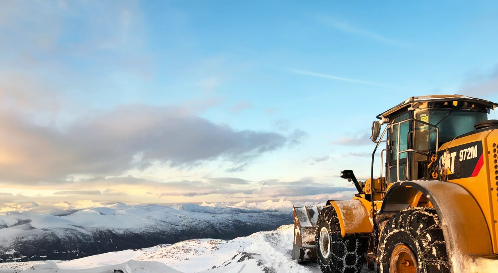

Anlegg, vei & infrastruktur · Inderøy
Utvalgte oppdrag og arbeidshverdag
Hvert oppdrag planlegges og gjennomføres med høy faglig standard, ryddig dialog og dokumenterte løsninger.




Standard i leveransen
Hva du kan forvente når du samarbeider med oss
Grundig forarbeid
Et varig sluttresultat krever riktig komprimering, bærelag og avrenning før toppdekket legges.
Kapasitet og maskinpark
Med moderne maskiner og erfarne maskinførere løser vi både små privatoppdrag og store entrepriser effektivt.
HMS og kvalitetssikring
Vi arbeider systematisk med sikkerhet, miljøkrav og dokumentasjon på alle anleggsplasser.
Lokal kjennskap
Vi kjenner grunnforholdene og klimautfordringene i området, og dimensjonerer løsningene deretter.
Har du et lignende behov eller prosjekt?
Send oss noen ord, så ser vi på løsningsforslag og prisoverslag sammen.
Be om tilbud